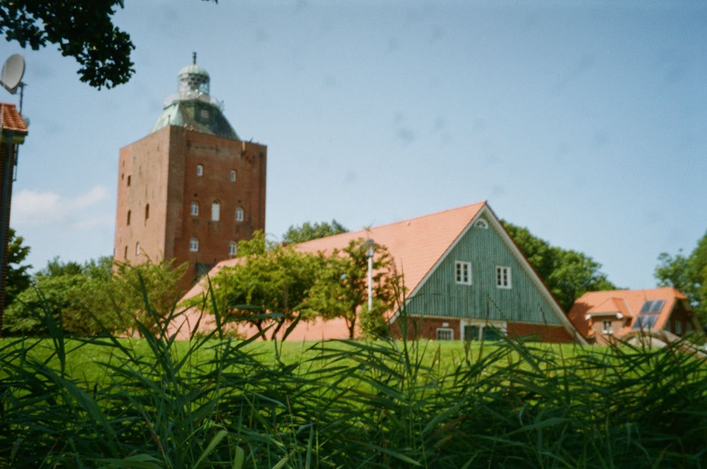
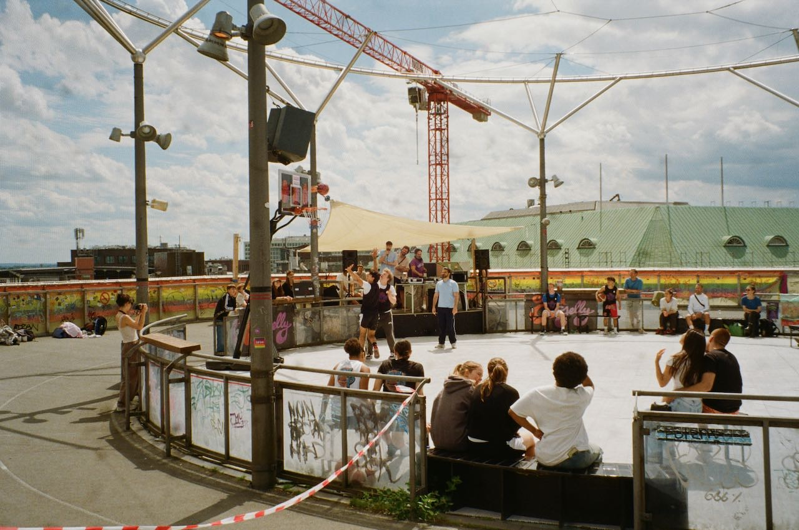
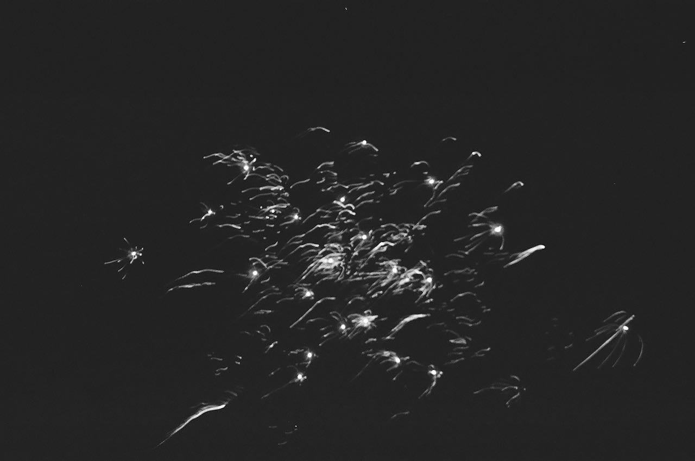
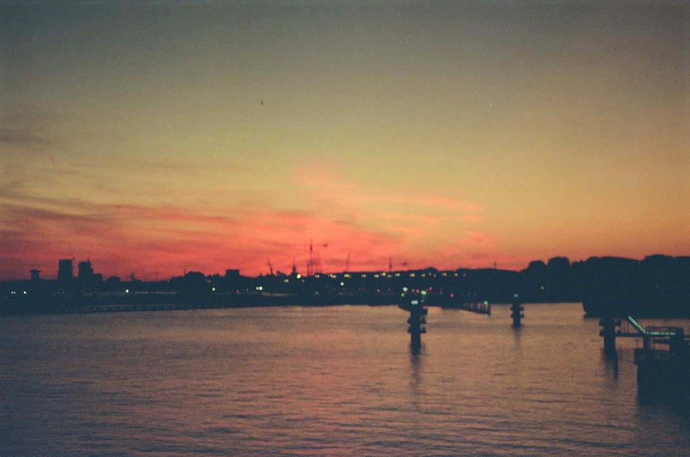
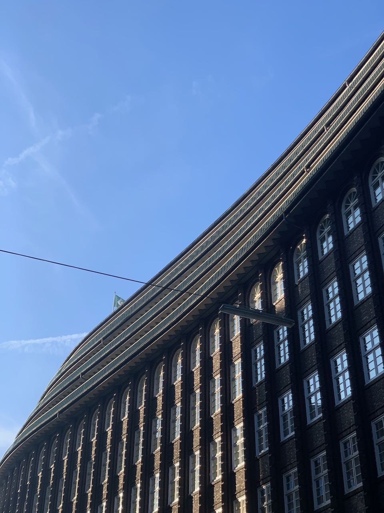
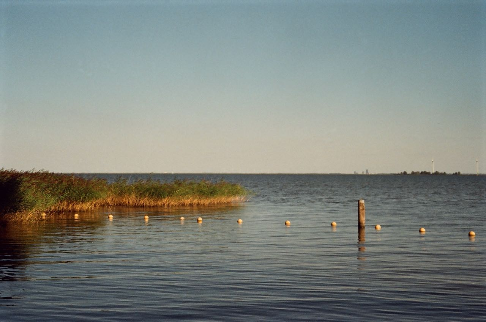
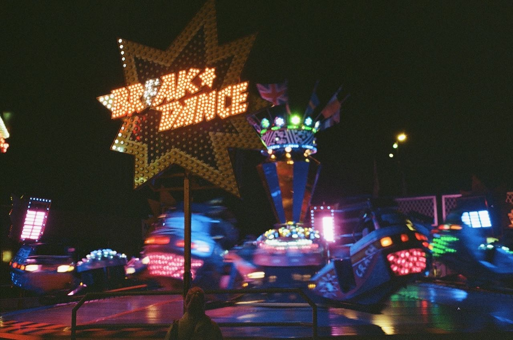
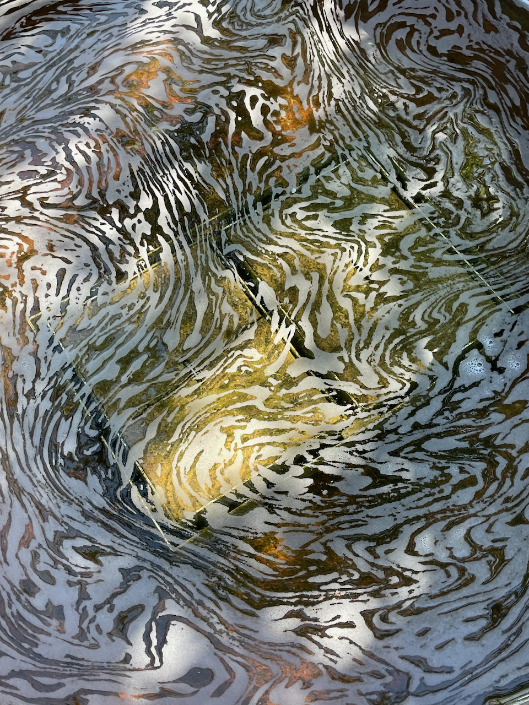

A photo I took of a pier in the calm Caspian Sea. I was visiting Baku and we went to the beach early in the morning to swim. On the way there, we got Azerbaijani bread, white cheese and watermelon.

This past summer, I took a train to the shores of the baltic sea. When the tide is out, you can walk 10 kilometers on the sea floor to get to the tiny island of Neuwerk. The island has some fun medieval history (it actually belongs to the city of Hamburg which is about 100km away) and it's a peaceful place in the summer sun. Here you can see some of the brick buildings framed by the island's greenery.

People playing basketball on the court atop Jupiter (a department store building turned gallery and community center) in central Hamburg, summer 2024.

This must be my attempt to photograph some fireworks at new year's eve 2022. I found this photo while looking through my folders and quite liked it even though you really can't see much.

This turned out blurry, but I think the color makes up for it. A view from a bridge in outer Amsterdam. This is also the image the random colors for the Albers shuffle are picked from on each load.

The flowing brick facade of the Chilehaus in the city center of Hamburg.

The Markermeer, seen from Monnickendam in the Netherlands. My partner and I cycled there from Amsterdam on a summer day in 2022. Cycling in the Netherlands is the best.

A scene from the Diemer Festijn 2022, an annual carnival that takes place in the Dutch town of Diemen. I went there with my partner and her roommate and it was a really fun time. I remember that it was really busy, seemed like the whole town came.

I visited Travemünde in spring and the former horse trough in the old town center had this strange foam pattern. There's something satisfying about it.